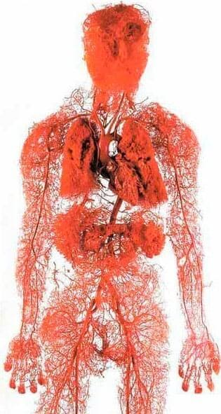
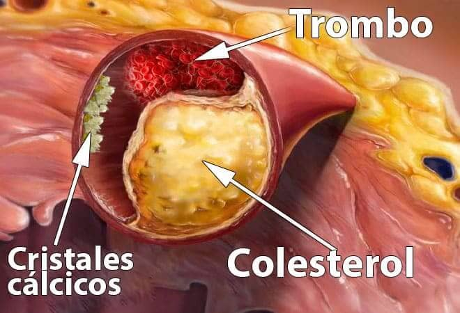
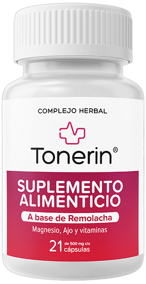

Limpiando vasos sanguíneos, olvídate de la hipertensión, junto con otras 9 enfermedades "incurables".
Todo el mundo sabe que la presión, el accidente cerebrovascular y el infarto son una consecuencia
de los vasos «contaminados» con colesterol. Enfermedades cardiovasculares. Sin embargo, pocos
saben que esto es solo
la punta del iceberg. Los vasos «sucios» son los culpables de 9 de cada 10 enfermedades crónicas
que se consideran incurables.
Duele la cabeza, salta la presión. Dolores y crujido en las articulaciones, el cuello no gira y no
se dobla la espalda. Por la noche, las piernas se hinchan y por la mañana se hincha la cara.
Zumbido en los oídos.
Dedos entumecidos y extremidades frías. La vista se empeora. La memoria se deteriora. No hay
fuerzas para nada. Muchos dirán que es la vejez. Pero no lo es.
¿Por qué los vasos limpios comprenden el 90% de tu bienestar?
¿Con qué más se contaminan los vasos además del colesterol?
4 signos claros y los 7 ocultos de los vasos malos
¿Cómo limpiar los vasos de forma segura en el hogar?
Nuestro reportero ha logrado entrevistar al Dr. Miguel Suarez, que nos ha explicado su método de
limpieza de los vasos sanguíneos para prolongar la vida.
Miguel Suarez cuenta con más de 11000 cirugías de cerebro abierto. Su paciente más joven tenía
solo 2 días.
El señor Suarez es capaz de explicar procesos médicos complejos con palabras simples. Ha escrito 47
libros de no ficción y libros de texto para personas sin educación médica. Él está absolutamente
convencido de que
nuestros vasos crean el 90% de la salud de nuestro cuerpo y de que de su pureza depende nuestro
bienestar.
¿Por qué los vasos limpios comprenden el 90% de tu bienestar?
Señor Suarez, usted dice que los vasos limpios son el 90% de toda la salud del cuerpo. ¿Por qué?
¿Cuál es el órgano más grande en el cuerpo humano? Pocas personas lo saben. Incluso los estudiantes de
medicina a menudo se equivocan. Suelen decir el cerebro y el hígado. Los más educados dicen que es la
piel. Pero en
realidad el órgano más grande es nuestro sistema vascular.
2.5 veces es posible abrazar el planeta con los vasos de una sola persona

Imagine. Si extendemos todos los vasos del cuerpo humano y los unimos en un hilo largo, la
longitud de este hilo será aproximadamente 100 000 kilómetros.
Para ser más claro - la longitud del ecuador de la tierra es de
40 000 kilómetros. Resulta que el "hilo" de los vasos de solo una persona puede abrazar todo el
planeta 2.5 veces.
¿Qué le parece esa escala?
Los vasos no son solo unos tubos a través de los cuales fluye la sangre. Este es un
órgano complejo y único, un fallo en el que inmediatamente sale en una enfermedad.
Los malos vasos en las piernas – varices, edema persistente y pesadez eterna en las
piernas, congelación o ardor insoportable en los pies. Grietas en los talones. Mala circulación - no
hay protección contra
las bacterias, de donde viene el hongo. Las uñas se hacen más rígidas y crecen por dentro de los
dedos.
Los vasos que alimentan el hígado están obstruidos –
hepatosis. Amargura en la boca. Si se come un poco de grasa, sale un eructo amargo.
Los vasos en las articulaciones se debilitan y se contaminan - el cartílago se seca.
Las articulaciones crujen y duelen, aparece la osteocondrosis, salen hernias.
Los vasos del recto han perdido el tono – sale la hemorroides.
Los vasos oculares – la vista se empeora, aparecen moscas en los ojos. Se desarrolla una
catarata. El enrojecimiento de los ojos, que a menudo atribuimos al cansancio, es en realidad
micro-hemorragias, o
sea los desgarros de los capilares oculares más pequeños.
La circulación cerebral se empeora– mareos, tinnitus y olvido. Por ejemplo, vas a la
cocina, y una vez que has venido, ya has olvidado para qué. O una palabra bien conocida está en la
punta de tu lengua,
pero no puedes recordarla. Todos estos son signos de deterioro de los vasos sanguíneos del cerebro.
Y, por supuesto, la reina de los vasos malos, su majestad la Hipertensión. La hipertensión
es la madre del accidente cerebrovascular y la hermana del infarto.
Los vasos son nuestro sistema de alimentación, la vida misma se mueve a través de los
vasos. Si se bloquea una parte importante de la pista, la vida se detendrá.
Los vasos obstruidos son la gazuza para todos los órganos.
El sobrepeso, por ejemplo, está directamente relacionado con los vasos. Los vasos obstruidos
con colesterol hacen los órganos carecer de la alimentación, porque no son capaces de entregarles la
cantidad suficiente
de nutrientes. Por lo tanto, el cerebro envía señales que hay que comer. Y la persona come. Pero los
órganos no reciben nutrición debido a los vasos sucios. El cerebro de nuevo exige - hay que comer. Y
así sucesivamente.
De ahí viene el deseo constante de masticar algo, los antojos de dulces y grasas - el cuerpo
necesita calorías.
Cuando mis compañeros les dicen a sus pacientes: «Tienes hipertensión porque tienes sobrepeso»,
confunden causa y efecto. No es la hipertensión que causa el sobrepeso. Es el sobrepeso que causa la
hipertensión.
El famoso dicho «Cuando hay salud, hay todo» puede continuar: «Pero la salud es imposible
sin vasos limpios»
Así que no me cansaré de repetir: si quiere vivir una vida plena, entonces limpie y restaure los
vasos. Vasos limpios son la clave para deshacerse del 90% de las enfermedades crónicas, algunas
de las cuales se
consideran incurables
¿Con qué más se contaminan los vasos además del colesterol?
Todo el mundo sabe que el colesterol es malo. Es él quien obstruye nuestros vasos sanguíneos, los
estrecha e interrumpe la circulación sanguínea. Pero no es el único culpable, ¿verdad?

6,1 kg es la masa total de la contaminación que se acumula en los vasos a los 50 años.
Colesterol
Sí, tiene usted razón. Las placas de colesterol o las "placas ateroscleróticas"
representan aproximadamente el 65-70% de la contaminación vascular.
A los 50 años, se acumulan hasta 5 kg de placas de colesterol en los vasos de una
persona. Los depósitos de colesterol estrechan la luz de los vasos en 4-5 veces.
Imagine. Si el lumen normal del recipiente es su dedo, entonces 5 kg de placas de colesterol
reduce el lumen al tamaño de 4 fósforos.
Las placas de colesterol en sí mismas no representan una amenaza para la vida. Sí, la calidad de vida
disminuye, la presión aumenta, hay dolores de cabeza y en las articulaciones, debilidad y apatía.
Mucho más peligrosa
es la masa trombótica, que también se acumula en nuestros vasos.
Masa trombótica
Los coágulos de sangre se acumulan mucho menos, unos 800 gramos hasta 1 kg. Pero su peligro es
que son inestables. En cualquier momento, un trombo (un coágulo de sangre) puede desprenderse y hacer
un viaje a
través de sus vasos en busca de una víctima.
Si el trombo es lo suficientemente grande, entonces sella herméticamente el recipiente de la víctima.
Ocurre isquemia, o sea la interrupción completa del suministro de sangre al órgano que se alimenta a
través de este
vaso.
Accidente cerebrovascular isquémico es el bloqueo de un vaso cerebral. Infarto es el bloqueo de la
arteria cardíaca. Isquemia hepática, colapso pulmonar, falla renal. Las hemorroides no son más que
isquemia vascular
rectal. El bloqueo incluso de los pequeños vasos de las piernas, con el tiempo conduce a la necrosis –
gangrena.
Cal de calcio
La cal de calcio en los vasos es un residuo de remedios químicos y suplementos dietéticos. Para
los 50 años se acumulan unos 300-400 gramos. La mayor cantidad de cal se acumula en los vasos
cerebrales.
El peligro de la cal de calcio es que tiene una estructura afilada y cristalina. Con un estrechamiento
agudo – un espasmo del vaso causado por el estrés o el esfuerzo físico o el clima, un cristal de cal
afilado puede
perforar el vaso y hacer que se rompa. Y la ruptura de un vaso cerebral es un accidente
cerebrovascular hemorrágico.
4 signos claros y los 7 ocultos de los vasos malos
¿Qué síntomas dicen que mis vasos están contaminados? ¿Cómo entender que el cuerpo nos exige limpiar
los vasos lo más pronto posible?
Francamente, si tienes más de 45 años y nunca has tomado nutracéuticos para limpiar los
vasos, te garantizo que tienes problemas con los vasos.
45 años son esa frontera después de la cual es necesario limpiar los vasos
La obstrucción de los vasos sanguíneos con colesterol, coágulos de sangre, calcificación es
esencialmente un proceso natural relacionado con la edad. Por supuesto, la comida moderna, los
remedios, el tabaquismo y el
alcohol aceleran el proceso de contaminación en 5-8 veces. Pero todos somos humanos y no podemos
escapar de esto.
El principal signo de los vasos contaminados
Si tiene un diagnóstico de Hipertensión, eso es suficiente. La hipertensión es la reina
de los vasos malos.
¿Sufre de saltos de presión? ¿Siempre es alta y tiene que tomarse remedios? Así que de los vasos
queda el 30% de lumen. El resto está densamente cubierto con placas de colesterol, coágulos de sangre,
y con cal de
calcio.
Por lo tanto, el más mínimo estrés, el cambio en el clima, la tormenta magnética se reflejan
instantáneamente en el bienestar. Salta la presión, la cabeza comienza a doler mucho, las
articulaciones se crujen.
Cuatro enfermedades causadas por los vasos malos:
1. Hipertensión La presión inestable o siempre alta, que tiene que ser bajada con
remedios. El indicador principal. ¿Tiene la hipertensión diagnosticada? ¡Los vasos exigen
limpiarlos!»
2. Varices
Las venas abultadas en las piernas, pesadez y dolor, hinchazón. La suciedad del colesterol y los
coágulos de sangre atascan las válvulas venosas. Poco a poco aparecen asteriscos vasculares, que
luego se convierten en
una red vascular. Y esa ya se está desarrollando en varices.
3. Hemorroides
Cuando los vasos rectales que drenan la sangre se obstruyen, los ganglios hemorroidales se
inflaman. Si los vasos sanguíneos que conducen la sangre se obstruyen primero, aparecen fisuras
anales.
4. Osteocondrosis
Es una falta de circulación en el cartílago. Los cartílagos se endurecen y comienzan a
desaparecer, sin tiempo para recuperarse. No se renuevan y se encogen. Pierden la capacidad de
amortiguar suavemente. Las sales
comienzan a crecer incontrolablemente, formando una joroba.
7 síntomas insinuantes:
1. Edema
Los vasos sucios no tienen tiempo para bombear líquido. Se altera el metabolismo del agua y la
sal. Por la noche, los pies se hinchan hasta que los calcetines se hundan en los tobillos dejando
abolladuras. Cara
hinchada y bolsas debajo de los ojos. Dedos no dejan quitar los anillos. Un estómago hinchado
habla de hinchazón de los órganos internos.
2. Tinnitus
De un fino chirrido apenas audible a un aullido fuerte y un zumbido que interfiere con el enfoque.
Es una consecuencia del aumento de la tensión de los vasos cerebrales que ejercen presión sobre
los tímpanos.
3. Vértigo La cabeza borracha, los ataques bruscos y repentinos de vértigo indican que su
aparato vestibular está pasando hambre. A menudo, también sufre el oído.
4. Insomnio
¿Se siente somnoliento y letárgico, mientras se va a la cama sin poder dormirse? Esto se debe
a la falta de suministro de sangre a la glándula pituitaria. Deja de producir melatonina, la
hormona del sueño.
5. Quebrantamiento
Ausencia de fuerzas. No quiere hacer nada. Solo quiere estar acostado y comer. Este sentimiento
surge porque el cuerpo entra en modo de ahorro de energía. Los órganos no reciben una nutrición
adecuada en los vasos
sucios y, para no morir, su cuerpo busca reducir la actividad tanto como sea posible.
6. Anomalías visuales Moscas, ondas, neblina en los ojos. Estos son síntomas de
insuficiencia vascular ocular
7. Dolor en las articulaciones
Dependiente del clima, las articulaciones se tuercen. Al despertarse por la mañana, no se siente
despierto y descansado, sino un discapacitado semiparalizado. Tiene que caminar por un tiempo y
amasar las
articulaciones endurecidas después del sueño. Es que el líquido sinovial pierde sus propiedades,
pega las articulaciones como una masa tirante.
¿Tiene al menos una señal? Los vasos exigen limpiarlos y nutrir.
La mayoría de las veces, las personas tienen varios signos a la vez en varias combinaciones.
A veces, todos esos signos.
Los infelices intentan tratar cada enfermedad individualmente. Se toman pastillas para la presión,
usan ungüentos para las venas varicosas, se ponen velas para las hemorroides, y aplican geles para la
osteocondrosis. Y
por supuesto usan un montón de analgésicos...
Es que al final tiran todo su dinero en el horno de farmacias. Es que la causa de todas las
enfermedades es una obstrucción vascular. Hay que empezar por ella, con la limpieza general de
los vasos.
¿Cómo limpiar los vasos sanguíneos de colesterol, coágulos de sangre y cal?
Vamos a ver un ejemplo de una tal Amalia Moreno de Santiago. Tiene 57 años de edad, está casada, tiene
sobrepeso, hipertensión y varices. Su cuerpo reacciona al clima con la precisión del barómetro: las
articulaciones
duelen, aparecen la debilidad y la somnolencia, tiene dolores de cabeza.
¿Cómo se puede ayudar a Amalia? ¿Con qué puede limpiar los vasos sin ir a los expertos y sin escuchar
la moraleja de haber debido perder peso haciendo ejercicio y comiendo bien?
La mayoría de los remedios de farmacia no tratan y ni siquiera ayudan, sino que causan
dependencia
Sí, nuestra medicina, desafortunadamente, cojea de ambas piernas. Por lo tanto, entiendo
perfectamente la renuencia a consultar a los expertos. Pero Amalia Moreno lo hará bien sola.
Para una limpieza segura de vasos, puedo aconsejar
un remedio con la reputación impecable - el nutracéutico . prolonga
la vida de 11 a 17 años, llenándola de energía y facilidad, en lugar de la pérdida de la vitalidad.
Es más seguro que una infusión. Y en términos de eficiencia, ocupa el segundo lugar
después de la limpieza quirúrgica de los vasos. Pero a diferencia de la cirugía no tiene
complicaciones ni efectos
secundarios. En un solo curso limpia todos los vasos del cuerpo. Desde grandes arterias gruesas hasta
pequeños capilares delicados.
es una mezcla capsular de extractos de plantas que, en contacto
con el agua,
despierta moléculas vivas. Estos limpiadores barren el moco de colesterol de los vasos, los
coágulos de sangre pegados a las paredes (placas de calcio), los restos de remedios. Cualquier
cosa que interfiera
con el flujo libre de sangre.
La suciedad que se ha acumulado durante años, envenenando su vida es lavada por
en 1,5 - 2 meses de admisión regular.
En un mes y medio, disuelve y elimina 4 kg de placas de colesterol. Diluye de 900
gramos a 1 kg de masa trombal y lava 350-400 gramos de cal de calcio.
Junto con ellos, se disuelven los dolores de cabeza y el tinnitus se disipa. El cerebro, que recibe
una nutrición completa a través de vasos limpios, funciona a la velocidad de una supercomputadora. Los
pensamientos se
hacen claros.
Los sentimientos se agudizan, se escuchan sonidos agradables. Mejora la audición,
puede analizar incluso una conversación tranquila en la habitación de al lado.
Los olores se vuelven placenteros. Desaparecen la congestión nasal, secreción nasal crónica,
alergias. Los bronquios se abren. La respiración es suave y libre. El aire fresco, llenando los
pulmones, se extiende
por el cuerpo con ondas agradables, causando una sensación de euforia leve.
Los sabores se vuelven brillantes y saturados. La comida habitual es un placer
inusual. Comes menos. Desaparece el deseo constante de dulce y grasa.
Las articulaciones cantan a coro «muchas gracias», dejando de doler. El crujido desaparece por
completo, en su lugar viene la suavidad de los movimientos, gracias a la actualización de la
lubricación articular. Es
como si el motor cambiara el aceite, reemplazara la grasa negra y sucia con virutas de metal por un
aceite fresco y transparente que proporcionara un deslizamiento perfecto.
Eso impresiona. Para ser honesto, es la primera vez que escucho sobre . He oído hablar de
nutracéuticos en general. En Japón e Israel han establecido legalmente el estado de los nutracéuticos
como el método de
tratamiento preferido. Y en México, estos remedios siguen siendo tratados con desconfianza.
Nuestra Amalia Moreno probablemente probó cientos de diferentes suplementos y pastillas, pero se
decidió a no tirar más dinero para dudosos medios milagrosos.
Nuestras dudas son traidoras, nos hacen perder mucho de lo que podríamos lograr
por temor a intentar hacerlo.
Déjeme contarle una historia instructiva sobre la desconfianza.
En 1928, se inventó el primer antibiótico, la penicilina. Curaba con facilidad la
disentería y el tifus, de los cuales, en aquel momento, la gente se moría.
Pero la mayoría de la gente no creía que pudiera ayudar porque ya se había quemado 1000 veces en
intentos de curarse. Aquellos que se quemaron 1000 veces y no tuvieron miedo de intentarlo en la 1001
vez se curaron. Y los
que se rindieron, murieron, aunque la salvación estaba justo frente a sus narices.
¿Cómo una vez que la penicilina venció las enfermedades dominantes en ese momento: disentería, tifus,
peste pulmonar. Así, con el tiempo, erradicará las enfermedades vasculares. Ya se están
dando los
primeros pasos (Japón, Canadá, Corea, Suiza e Israel) para legislar la limpieza de vasos con
nutracéuticos preferibles a la terapia con remedios.
En México se prescribe oficialmente en un solo lugar:
En la clínica central. En la misma donde van nuestra nobleza: celebridades y otras élites. Por lo tanto, los pacientes obtienen un resultado, y no un proceso interminable.
Al resto de nuestros ciudadanos, el nuestra medicina ofrece tratamiento con las sustancias químicas que producen las plantas pertenecientes a esta misma élite.
Yo también creo que las dudas son nuestro peor enemigo, así que no tengo miedo de
probar cosas nuevas.
Imaginemos que compro , abro un frasco de plástico agradable al tacto, saco la cápsula, la
tomo con un vaso de agua... ¿Qué pasa después? ¿Cómo funciona ?
es un tesoro de extractos curativos raros que funcionan juntos
en la pureza y la
fuerza de los vasos.
Limpia «escombros»
Polvo de raíz de remolacha limpia los bloqueos de colesterol. Las moléculas de oliva como un cincel
repelen las partículas de colesterol pegadas en las paredes de los vasos. Se libera un pasaje para la
corriente de sangre
libre. Los órganos finalmente comienzan a "beber". Los cartílagos cobran vida, saturados de humedad y
oxígeno, activan el mecanismo de autocuración. Restauran la elasticidad. Desaparece el crujido y los
chasquidos en el
cuello, la espalda y las articulaciones. En las rodillas y los dedos ya no dependen del clima.
La hinchazón se resuelve. Incluso después de pasar todo el día en pies, no se hinchan.
Se restaura el suministro de sangre a la piel: la vasculatura y las estrellas
desaparecen. Las venas varicosas disminuyen gradualmente, los ganglios hemorroidales se secan.
Convierte en energía
Las moléculas del extracto de ajo entran en juego. Atrapan las partículas de colesterol y, al
fusionarse con ellas, se convierten en lipoproteínas útiles de alta densidad que se ocupan de la
descomposición de las
grasas.
mata dos pájaros de un tiro - elimina la suciedad del colesterol en los vasos y estimula la
quema de grasa adecuada. Debido a ello, se siente una poderosa oleada de fuerza, se quiere moverse,
los ojos se
iluminan, hay una sensación agradable y muchas fuerzas.
Alivia los espasmos
Citrato de magnesio alivia los espasmos vasculares. Esto es un calmante para los vasos. Calma
y relaja los vasos comprimidos de la falta de flujo sanguíneo. La presión vuelve a la normalidad de
manera suave y
segura. El dolor de cabeza se disipa, el tinnitus disminuye, los pulmones y los bronquios funcionan
sin problemas y con facilidad. Ya no hay sensación de falta de aire.
Descarga el corazón
Grado alimentario en polvo de algas espirulina recorre los vasos en busca de coágulos de sangre. Discorrea disuelve la sangre, la
hace ligera y fluida. Disuelve coágulos de sangre e incluso pequeños aneurismas. Lava los depósitos de
cal de calcio en
los vasos, que dejaron los remedios químicos.
El corazón exhala relajado. El ritmo del corazón se vuelve lento y medido. La arritmia y la
taquicardia ya no molestan. El hormigueo agudo en el pecho causado por la sobrecarga del corazón no se
repite y se olvida para
siempre.
El riesgo de infarto cae a cero.
Parchea los vasos
Vitamina B3 parchea las paredes de los vasos.. Microdaños, lugares de probable ruptura del
vaso, moléculas de Hinojo se pegan. El cerebro está bajo una protección confiable contra el accidente
cerebrovascular. Sus
células reciben nutrición y oxígeno, hay una agradable sensación de cabeza ligera.
Efecto Mariposa
es como el aleteo del ala de una mariposa, lo que provoca una reacción en cadena de cambios
impresionantes. Comenzando con la limpieza de los vasos de la suciedad acumulada durante décadas, paso
a paso,
desencadena una reacción de recuperación del cuerpo.
2 meses del curso de es como un renacimiento
Un ligero despertar
Se levanta por la mañana fácilmente de la cama, no necesita forzase, amasando y frotando
las piernas, crujiendo la espalda y el cuello.
Desde la mañana, el cuerpo se llena de energía y fuerza, porque los vasos están completamente limpios
y durante la noche todos los órganos recibieron una buena nutrición y descanso. Ninguna parte del
cuerpo murió de
hambre por la falta de suministro de sangre, ganando fuerza para un nuevo día.
Delicioso desayuno
Para el desayuno, se come un sándwich con una gruesa capa de mantequilla y crujientes, y el hígado y
el estómago los toman con facilidad. No más eructos amargos, dolor de estómago punzante. ha
destapado los vasos
que alimentan el estómago, ahora digiere incluso un clavo.
Grandes fuerzas
Al salir de la casa ya no tiene que preocuparse por las piernas: caminar a pie no es una carga, puede
caminar al menos todo el día, y las piernas no se cansan y no se hinchan. Las sandalias, los zapatos,
los calcetines
no se hunden en los pies hinchados como un cordel en un palo de salchicha.
Calma absoluta
Estás absolutamente tranquilo y relajado. No más dolor constante que devora la conciencia sin dejar
que se concentre en otra cosa. Cuando nada duele, las cosas habituales, los sonidos, los olores juegan
nuevos colores
olvidados.
Alegría envidiable
Incluso después de un duro día de trabajo, llega a casa con una cabeza clara y ligera.
El cerebro funciona como un reloj suizo, no se siente cansado en absoluto.
Un sueño agradable
Y así, cuando se acuesta, se sumerge en un sueño rápido y agradable. Atrás quedaron los días en que
estaba dando vueltas en la cama a medianoche, de vez en cuando volteando la almohada, y el sueño no
llegaba. Ahora todo
es fácil - decide cuándo quedarse dormido, y el cuerpo cumple obedientemente la orden.
Déficit y programa de rebajas
ha desaparecido de la mayoría de las farmacias. ¿Por qué?
Desafortunadamente, sí. Desde principios de este año, ya no se envía a las
farmacias.
La causa del conflicto fue la codicia de las cadenas de farmacias, que exigieron al fabricante de
que les pagara 7160 Mex$ por cada unidad de remedio vendido. Con el gran margen de
beneficio (el costo
del curso en algunas farmacias de México llegó a 14320 Mex$), los farmacéuticos
querían introducir una tarifa adicional del fabricante.
Los representantes de las farmacias dijeron que tal margen de beneficio les permitiera sobrevivir.
Después de todo, es un remedio que se compra 1 una vez cada 7-10 años. Además,
después de la limpieza
de los vasos con , ¡una persona deja de necesitar remedios que tomaba constantemente! Las
personas rechazan los medios para bajar la presión, dejan de comprar remedios contra el dolor en las
articulaciones.
Reducen significativamente el consumo de remedios contra el asma y la diabetes. Y esto conduce a
pérdidas de farmacias. Por lo tanto, exigen establecer el precio más alto posible en .
Como resultado, el fabricante de rompió contratos con todas las farmacias y ahora se dedica a
ventas solo en línea. Sí, es correcto. Piense bien: no es necesario pagar por el alquiler de lugares
comerciales, no
hace falta pagar sobornos a las farmacias para entrar en ellos. Por lo tanto, ahora es mucho
más asequible que cuando se vendía en farmacias.
Programa de rebajas (OFERTAS) «Vasos limpios»

El centro de investigación, los Correos y el fabricante de , como parte del proyecto de
telemedicina (Internet de Medicina), han lanzado el
programa de rebajas.
Los residentes de las regiones participantes en este programa puede solicitar en
este programa pueden solicitar.
¿Qué se necesita hacer para entrar en el programa?
Más detalles sobre cómo obtener con hasta un 50% de descuento y conseguir con
envío a todo el país:
¡ no se vende en farmacias! Por lo tanto, todos aquellos que deseen obtener con un
descuento de hasta el 50% pueden participar en nuestro sorteo. Después, serán contactados por
nuestros cualificados
especialistas para desarrollar un plan de tratamiento personalizado con "". No importe dónde
viváis, podemos enviar el producto a cualquier parte de México. El envío es por mensajería urgente
directamente a
vuestro domicilio.
Hemos lanzado una campaña publicitaria a gran escala en todos los medios de comunicación para llamar
la atención de las personas sobre este producto y prometimos sortear 200 envases de el
Todos pueden participar en este sorteo y llevarse el premio principal: ¡un 50% de descuento! Esta
promoción que creamos para México tiene como objetivo llamar la atención de la gente sobre este
producto.
¿Cuánto tiempo durará el programa de rebajas?
Hasta el
inclusive o hasta que se entregue la última unidad de . Y todo esto a pesar de la ausencia de
publicidad en la radio y la televisión. La gente transmite información, lo recomienda a familiares y
amigos. Fue una
sorpresa para nosotros que la información sobre el programa preferencial comenzara a divulgarse tan
rápidamente.
Por lo tanto, aconsejamos pedir lo antes posible. El remedio tomado con unas pausas largas
no será efectivo.
Recordad, la promoción especial es válida hasta:
Discusión
Pilar Saelices
Mi dicen cuando habrá este programa de descuentos en Sevilla? Necesito mucho , pero no tengo mucha pasta para el curso a su
costo total...
Miguel Suarez (editor)
Pilar, por lo que sé, en su región el programa fue en mayo y ya terminó. Tal vez el
próximo año lanzarán uno nuevo, pero eso no es seguro.
Pilar Saelices
Vaya pena! No sé que hacer... Ahora no tengo tanto dinero...
Marina Sánchez
Pilar, y no tienes alguien en Santiago? Podría pedirles que pidan con descuento. Pero, si
te envían ) es que según los términos del programa, solo puede reservar un curso por persona.
Javier Lacer
Compré un curso de 2 meses por casi 30 mil. Fue ll año pasado, cuando se vendía en las
farmacias. Y no me arrepiento! Aunque resultó caro, ahorré casi la misma cantidad en otros
remedios. Y ahora se vive
mucho mejor, esto no se compra con dinero! A los 52 años me sentía como un anciano enfermo. Siempre
usaba tonómetro y me tomaba pastillas, ni siquiera soñaba con vivir antes de la jubilación, la
cabeza me dolía mucho,
a veces quería morir lo más pronto posible... Pero en 2 meses del curso me olvidé de la presión
alta, me siento como un HOMBRE saludable (si entendéis lo que quiero decir)! Así que incluso si no
hay un programa de
descuento en su región, pida sin descuentos, por cualquier cantidad, no se arrepentirá! Es que me
parece, pronto prohibirán , priva de beneficio muchas empresas.
Isabel Navarro
es EL MEJOR REMEDIO DE TODOS. Primero usaba Adelfan, luego en Erynit. Ya sé, son
remedios obsoletos. Pero no me gusta ir a los expertos, y no es que me molestara mucho la
enfermedad. Tomaba ocasionalmente,
cuando la presión se me subía o el corazón se volvía loco. Pero entonces, de repente, dejaron de
funcionar. Entonces fui al médico y él me aconsejó que probara el nuevo remedio (el
médico es joven y todavía
creía que la medicina debería ser para tratar las personas, no para sacar su dinero!). me
ayudó desde el primer uso: la presión disminuyó de inmediato. Hice un curso, como aconsejó el
médico. En 3 semanas,
olvidé qué es la hipertensión. Las varices de que sufría durante 10 años, pasaron! Además tenía
problemas femeninos, desaparecieron. Me siento muy bien, como cuando era joven!
Pía Molino
¡Gracias! Obtuve un 30% de descuento. Me lo voy a probar.
Juan Abellán
En Tarapacá hay programa?
Miguel Suarez (editor)
En toda México, el programa de descuentos se planea para este mes. Si nada cambia, se
enviarán 30 000 paquetes de .
Francisco Palacio
30000 para una región? Es una gota en el mar...
Camila Pelos
Flipo con los que quieren todo gratis!!! Siempre les deben todos!
Lo compré por 23900 Mex$! Qué vergüenza! Como os atrevéis decirlo!
Elena Martín
No juzgues y no serás juzgado! No sabes en que situación puede estar alguien! Puede
ser discapacitado, de donde le viene dinero?
Rubí Lacasa
Mi madre comenzó a tener problemas con los dedos de las manos, un médico familiar aconsejó limpiar
los vasos. Prescribió "estatinas", pero es que pueden causar cáncer de recto y decidimos no tomar
riesgo. Luego supimos
de . Compramos por 22 mil un curso. Pero el resultado no se hizo esperar, después de
un par de días, hubo una mejora notable en la tez, el cabello, las uñas y el estado general del
cuerpo, y en la
segunda semana, los dedos prácticamente dejaron de entumecerse. Durante un mes y medio el
entumecimiento ha pasado por completo y además la presión se ha normalizado. Mi madre se volvió muy
enérgica, mejoró la memoria
y le dejaron de doler las articulaciones dependiente del clima. Recomiendo a todos este remedio!
María Noboa
Compré porque casi siempre por la noche me dolía la cabeza, ni siquiera analgésicos
ayudaban. Supe más tarde que me dolía la cabeza por la presión. Pero no es el punto. Un compañero de
clase me recomendó
. En dos meses me hice otra persona! Me di cuenta de que no había vivido hasta la limpieza de
los vasos! La cabeza ya no me preocupa, las varices desaparecieron y lo MÁS IMPORTANTE es que PERDÍ
20 KG! De 94 a 74
kilos! Eso es normalizar la circulación! Recomiendo a todos!
Ana Cadaval
Gracias por el comentario!No me gusta nada ir a los expertos, ya que prescriben remedios
caros(recuerdo que no pude encontrar en ninguna farmacia de nuestra ciudad unas gotas especiales
recetadas para los ojos).Y no
siempre los curadores "ven" los problemas internos de nuestro cuerpo. Desde hace un año, mis manos
se adormecen periódicamente por la mañana. Gracias a sus comentarios, probaré este . Incluso
si no es la razón,
siempre es bueno limpiar los vasos! Es que tomar un producto natural hace bien. Muchas gracias!
Aliyana Fraga
¡Gracias por el artículo! Me llegó a tiempo. Acabo de hacer análisis de colesterol y el médico me ha
recetado un curso de estatinas. Pero no me gusta eso, mejor probaré , la composición natural
me da más
confianza.
Susana
He oído hablar de este método para limpiar los vasos, pero todavía no lo he probado...
Creo que es el momento de probar =)
Ximena Dávalos
Me arriesgué y todavía no me arrepiento. Si hay problemas con los vasos, lo
recomiendo. Sin efectos secundarios, y el resultado es impresionante
Alicia
Tengo el nivel alto de colesterol, me recetaron LIVAZO. Ni siquiera pude tomármelo durante una
semana, los ganglios linfáticos estaban hinchados, especialmente en el cuello, no podía girar la
cabeza. Además, la vista
se empeoró. En 4 días de uso, apareció "mugre" en los ojos. El médico ha dicho que esto sucede con
las estatinas por sus efectos secundarios. Luego me prescribió CRESTOR pero tenía miedo y no me lo
tomaba. Ahora creo
que probaré , es que la composición natural no debería causar ningún efecto secundario?
Pablo Jiménez
es el mejor! No tiene efectos secundarios, todo es natural. A veces solo puede aparecer una alergia.
Jorge
El mejor remedio contra colesterol es la DIETA!
Nati
La dieta ayudará contra la formación de nuevos depósitos, y los viejos no se verán
afectados de ninguna manera. Créeme, he pasado esta historia con dietas más de una vez.
Jimena Beldad
El colesterol fue 6.8, lo cual es mucho para mí. Mareos constantes, saltos de presión y malestar. Y
después de 2 meses, la cifra era 3.4, pero lo principal es mi bienestar! Ahora estoy completamente
sana. Me di cuenta
de la diferencia, lo que es la sangre no "grasa", cuando la cabeza es ligera))) La gente me
encuentra y dice que incluso hablo mejor! Cambios en todo.
Mónica Ordóñez
Gracias por la información! Quiero intentarlo, la presión no me deja vivir...
Ana París
es uno de los mejores remedios más económicos y efectivos! Si se compara
con Crestor, resulta 10 veces más barato, el resultado es 10 veces más largo y no hay efectos
secundarios.
En su región quedan unidades de con DESCUENTO: 19 unidades
las solicitudes para obtener «» rebajado se aceptan hasta el final del día
Discusión